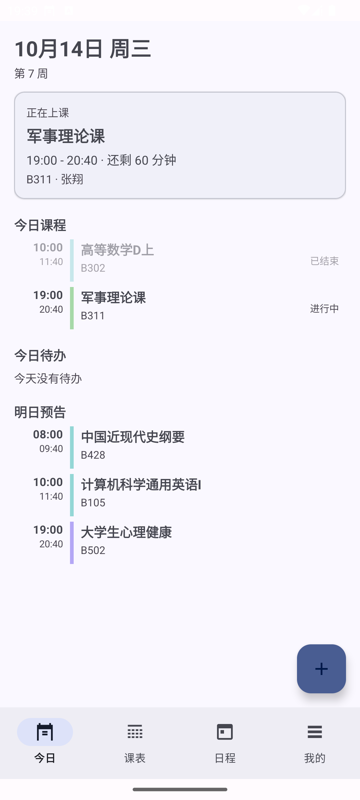
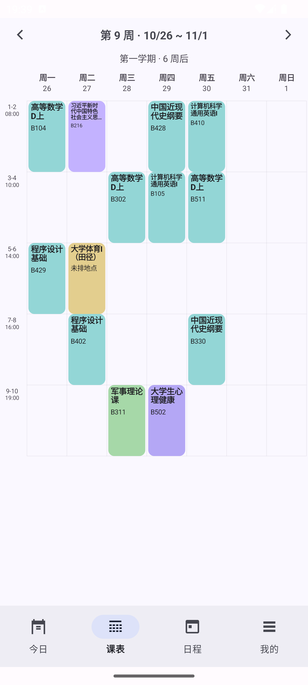
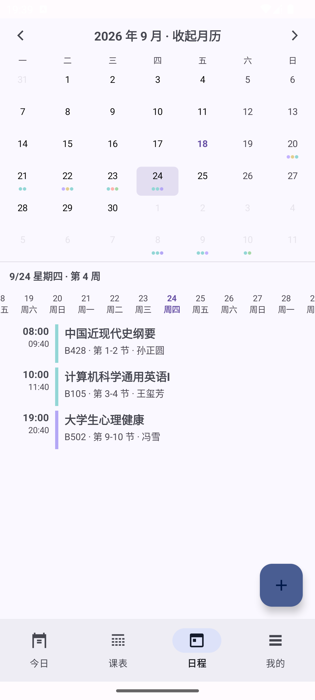
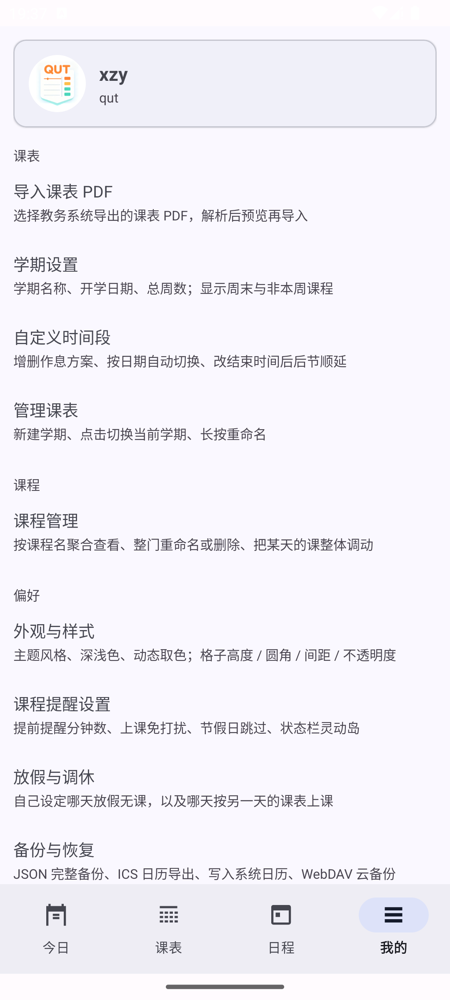
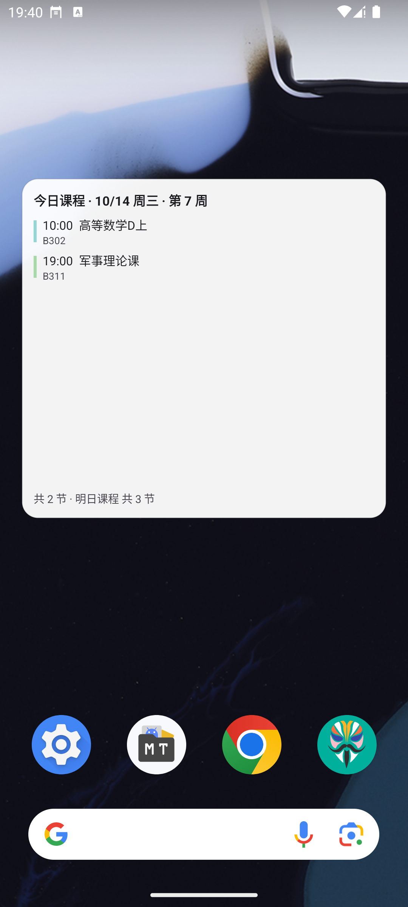

青岛理工大学学生的开源课表应用。教务系统导出的 PDF 直接导入，星期、节次、周次、 教师、地点一次还原；之后的提醒、待办、调休、小组件全都自动。 没有账号，没有广告，数据只存在你自己的手机里。
装过的直接覆盖安装即可，本地数据不会丢。
底部四个主页面：今日 / 课表 / 日程 / 我的，外加一个桌面小组件。





从导入到日常使用，该有的都有。
直接读教务系统导出的课表 PDF，自动还原星期、节次、周次、教师、地点、学分与考核方式。 导入前先预览，确认无误再落库。
开学日期填一次，之后「今天是第几周」全自动；每门课只在它自己的周次范围内出现， 单双周、跳周都能解析。
长按一节课：临时调课到… 只把这节课挪到别的日期（还能顺手改节次）， 本次停课 只停这一次。原课表一个字节都不动，随时一键撤销。
周视图上长按没有课的格子，就能在那天临时加一节课或加一条待办， 补课、讲座不用新建固定课程。
自己设定哪天放假无课（支持整段日期），以及「某天上另一天的课」。 应用不内置任何节假日数据，全部按学校通知填。
按分钟数提前提醒，每门课可单独覆盖；上课期间自动免打扰，下课自动恢复。 Android 16 上还能把当前课程常驻到状态栏 / 灵动岛。
今天 / 明天的课程概览与当日课程数，深浅色各有外观，点按直达应用； 每天零点自动重排提醒并刷新，不用打开 App。
JSON 整表备份换机还原；ICS 导出到系统日历自带课前提醒； 也可以备份到自己的 WebDAV 网盘。
完整 M3 配色，支持动态取色跟随系统壁纸；三套主题预设， 课表格子的高度、圆角、间距、不透明度都能调。
待办 / 活动 / 考试 / 作业分类，可勾选完成；整月日历加日期轴， 完成状态在今日页与日程页双向同步。
上午 3–4 节按楼层错峰上下课，应用按教室号自动判断楼层 （A302 是 3 楼，B404 是 4 楼），提醒、状态栏和导出的日历都按各自楼层的时间走。 课表时间列会写成两行，一眼看出两种时间。
时间或楼层分界都能自己改：我的 → 自定义时间段 → 第 3-4 节 · 按楼层区分时间。
全程在手机上完成，几分钟搞定。
.apk 下载。首次安装需要在系统里允许「安装未知来源应用」。应用内的首次引导第 3 步有带截图的分步说明。 当前解析器只适配青岛理工大学教务系统的课表版式。
没有账号系统，没有埋点统计，也没有广告。
课表、待办、个人信息全部保存在应用私有目录下的 schedule.json。
联网只发生在你主动触发的两件事：检查更新、WebDAV 备份。
通知、精确闹钟、日历、勿扰访问等权限只在用到对应功能时申请， 不授权也能正常看课表。
Apache License 2.0，源码托管在 GitHub， 欢迎 Issue 与 PR。
不会。直接覆盖安装即可，课表与待办都保留；换手机可以用 JSON 备份还原。
课程、提醒、小组件这些功能都能用，但 PDF 解析目前只适配青岛理工大学教务系统的版式， 其他学校的课表版式需要调整解析规则。
在系统设置里允许应用「闹钟和提醒」权限，并把这个应用加入电池优化的白名单， 否则部分厂商的系统可能延迟唤醒。
各校区、各学年安排不一样，与其猜错不如按学校通知自己填：我的 → 放假与调休。